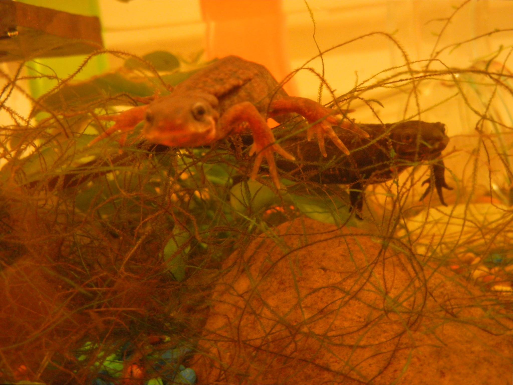

- How to work with the CSS Box Model to control size and scale and space around HTML elements
- How to work with
container
orwrapper
elements in CSS flex-box layouts - Elements can be block or inline in the way they visually represent their contents. CSS can handle a combination of both with inline-block, to create blocks with a set height and width that can sit side by side in a line:
- Examples
- Sample use: horizontal navigation bar
<div>and<section>elements work well for containers.- How and when to resize images
- using CSS properties
- using an image editing program to change their dimensions. Most times you do not need a very high image resolution or the full size of an image for viewing on a website.
- How to work with CSS selectors to isolate particular patterns in HTML, like:
- nested elements (like this sub-list)
- common HTML attributes
@classand@id.